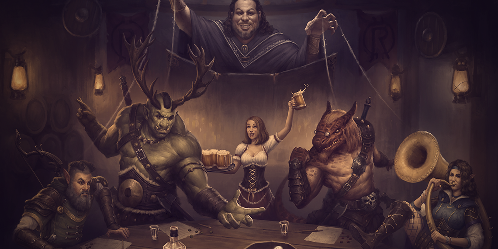

Aprenda a Jogar Rpg de Mesa:
Nesse jogo, você reúne um grupo de amigos para sair em uma sequência de missões, que variam entre derrotar dragões, salvar crianças de um necromante ou invadir um castelo para roubar um artefato mágico. Realmente não existem limites para as aventuras que lhe aguardam, então prepare-se que eu vou te explicar tudo que você precisa saber para jogar.
O que você quer ser?
Antes de começar, eu convido vocês a pensarem um pouco em que experiência estão procurando num jogo desse tipo.
Talvez você queira explorar um mundo divertido onde nada é levado a sério e ações tem poucas consequências, como no filme Guardiões da Galáxia. Ou então você prefere descobrir os segredos de uma mitologia robusta, onde os personagens tem dramas pessoais, cada ação tem um peso e tudo se liga num evento climático, tipo os jogos de The Witcher.
Conversar com seus amigos sobre suas expectativas antes mesmo de jogar é crucial para que todos estejam no mesmo barco, para evitar possíveis aborrecimentos.
Também não espere algo tão elaborado como Critical Role, pois esse podcast é um programa com roteiristas e atores profissionais. O objetivo aqui é se divertir.
Regras e Cenários
Dito isso, vamos começar a entender melhor cada peça que constrói um típico jogo de RPG.
Primeiramente temos o sistema de regras, que é o que diferencia jogar RPG de ler um livro. Ele descreve como os jogadores poderão interagir com esse mundo. Alguns sistemas focam na interpretação, outros preferem detalhar opções de combate. Sabendo a experiência que você quer ter ao jogar um RPG, você poderá escolher o sistema mais adequado.
O próximo passo é definir o cenário onde seus personagens irão habitar. Esse é o mundo que você vai explorar, com seus lugares, culturas e histórias que vão fazer a experiência ganhar vida. Cada sistema tem o seu grupo de cenários, que pode ser mais medieval, futurista ou até mesmo envolver super-heróis. O importante é escolher algo que você goste, pois vai passar muito tempo desvendando cada mistério desse universo.
Mestre
Quem irá guiá-lo por esse cenário é o mestre. Ele é um jogador que funciona como narrador dos eventos. Apesar de definir as missões, a mitologia e os vilões, não dá para dizer que é ele que cria a história, pois o que determina o rumo da aventura são as escolhas dos jogadores.
O principal papel do mestre é garantir que o jogo está avançando de maneira justa. Ele tem um conhecimento notável sobre as regras, determinando como as coisas progridem a cada rolar de dados. Dados são uma parte essencial do jogo. Você pode apenas declarar o que seu personagem pretende fazer, mas o que define se ele realmente conseguiu é o quão alto você consegue somar nos dados. Isso é feito para que ninguém tente ideias mirabolantes todo turno, sem consequências.
Criando seu Personagem
Além do mestre, sua aventura vai precisar de algo entre 3 a 5 outros amigos. Eles serão os demais jogadores que irão compor o seu grupo de aventureiros. Não é necessário que vocês se conheçam profundamente, mas é bom que vocês consigam cooperar, pois isso será essencial para progredir em sua aventura.
Cada jogador vai viver o papel de um personagem, que pode ser criado do zero por você ou preparado pelo próprio mestre. Pode ser mais fácil começar com um personagem já pronto, mas montar seu próprio personagem costuma ser bem mais satisfatório.
Os cenários são povoados por tipos diferentes de criaturas que ocupam papéis distintos na sociedade. Na hora de escolher com quem jogar, pense primeiro na história do personagem. Quem ele é? De onde ele veio? Por que ele se meteu nessa aventura? Qual é o objetivo dele com tudo isso?
Montando a ficha
Conhecer o seu personagem é importante para te guiar na hora de montar a sua ficha. A ficha é onde está descrito tudo que um personagem pode fazer e como ele se comporta. Normalmente você pode baixar um modelo no site oficial do sistema ou cenário escolhido e preencher com as suas escolhas.
Para se guiar nessa hora, use sempre o livro de regras. Escolha primeiro a classe de seu personagem. Esse é o papel que ele irá desempenhar no grupo, normalmente variando entre ataque físico, ataque mágico, suporte e um misto entre eles. Exemplos em Dungeons & Dragons seriam ladinos, magos, bardos e clérigos, respectivamente.
Sabendo que tipo de personagem ele é, hora de pensar na sua origem. Escolha a raça a qual ele pertence. Geralmente, cada raça traz um pequeno bônus, mas o importante é pensar o que teria levado um membro dessa raça seguir o caminho da sua classe. Por que um meio-orc seria um feiticeiro, por exemplo? Responder a essa pergunta de forma criativa pode tornar seu personagem ainda mais interessante.
Por fim, hora de pensar em seus atributos. Eles são uma forma de medir o quão habilidoso seu personagem é em determinada área. Cada sistema escolhe o que medir, mas costumam ser uma variação dos atributos mais comuns. No D&D, temos Força, Destreza, Constituição, Inteligência, Sabedoria e Carisma. Procure na seção da sua classe quais atributos o livro recomenda que sejam mais fortes e distribua os valores determinados pelo seu mestre.
Algo que pode ajudar a manter um personagem coeso é decidir seu alinhamento. Ele é bom ou mau? Caótico ou mais certinho? Tente fazer ele parecido com você mesmo, para ter facilidade em sempre saber como ele pensaria. Ou então, baseie ele em um personagem da cultura pop que você conheça bastante, como o Hulk. Aí é uma questão de se perguntar: “O que o Hulk faria?”
Começando a jogar
Até aqui, já foi bastante coisa nova para aprender. Não se pressione a entender tudo que existe sobre um sistema assim de primeira. Tudo bem não saber tudo. Tudo bem se perder um pouco. Está apenas começando a jogar, afinal.
É mais fácil e divertido aprender RPG enquanto joga. Se uma regra nova surge em uma situação especial, não tenha vergonha em perguntar ao mestre como proceder. Aos poucos você vai descobrindo como agir e quando ver já terá dominado o sistema.
Dito isso, é bom que você aprenda pelo menos o básico para conseguir jogar. Passe um tempo lendo a seção do livro sobre a sua raça e a sua classe, para entender exatamente o que você consegue ou não fazer. É importante saber também como funcionam as etapas de combate: que dados irá rolar, como é decidida a ordem dos turnos, o cálculo de dano, essas coisas.
Por fim, tente entender a diferença entre os atributos de cada personagem, pois isso surgirá bastante durante a exploração. Imagine que seu personagem tem números altos em inteligência, por exemplo, e precisa lidar com uma pedra gigante no seu caminho. Será mais efetivo que ele procure algo para usar de alavanca, que precisaria de inteligência, do que tentar resolver o problema com a força bruta.
Com isso, você não terá muitos problemas para encarar sua primeira sessão. Não se preocupe que, assim como seu herói, você irá evoluir aos poucos, ao ganhar mais experiência. Espero que esteja mais confiante para seguir em sua aventura.